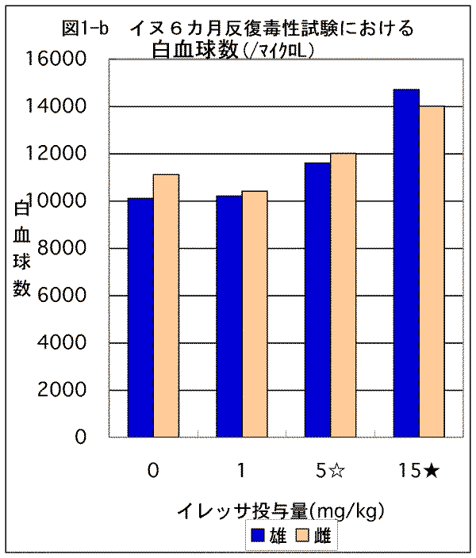

イヌ６カ月反復毒性試験における肺相対重量および、白血球数
| |
肺相対重量（/体重） |
|
|
白血球数(×109/L） |
|
雄 |
雌 |
|
|
雄 |
雌 |
| 0 |
0.76 |
0.81 |
|
0 |
10100 |
11100 |
| 1 |
0.78 |
0.85 |
|
1 |
10200 |
10400 |
| 5☆ |
0.85 |
0.84 |
|
5☆ |
11600 |
12000 |
| 15★ |
0.9 |
0.91 |
|
15★ |
14700 |
14000 |

☆5mg/kg群の雄１頭（４頭中）が18週で発熱屠殺（死亡）
★25mg/kg群の雌１頭（４頭中）が10日目に衰弱屠殺（死亡）したため11日から15mg/kgに減量した。
したがって、この群の実質的投与量は15mg/kgである。
肺相対重量は、15mg/kg群雄で対照群に比し有意に増加（p<0.01）。
白血球数は、15mg/kg群雄雌で対照群に比し有意に増加（p<0.01）。